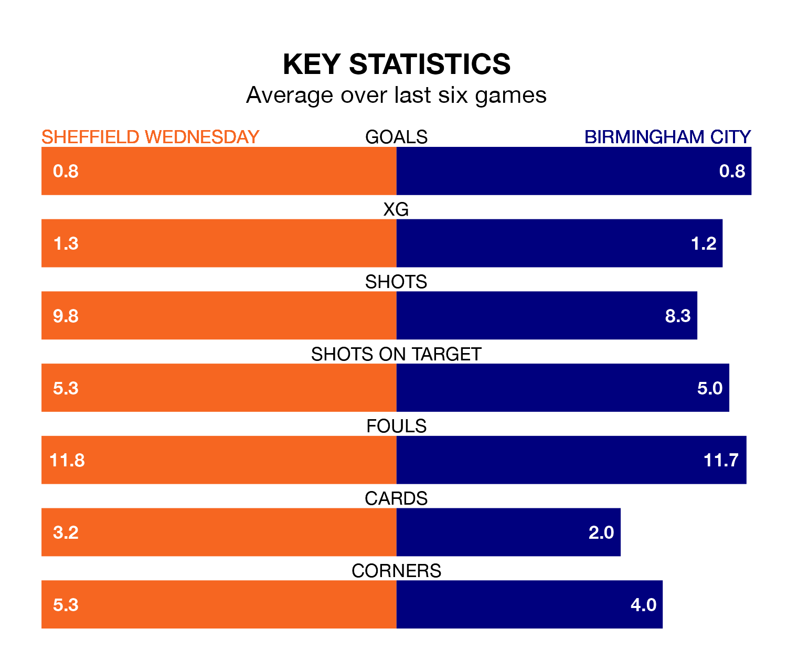

Birmingham City travel to Sheffield Wednesday on late Friday in EFL Championship.
The visitors come into the game on the back of a defeat in their last match, having lost to West Bromwich Albion 1-0 away.
The Owls also lost their last match, 4-0 against Huddersfield Town.
Wednesday are 23rd in the table after 30 games, of which they have won six and drawn five, earning 23 points.
Birmingham are four places ahead of the Owls in 19th, with eight wins and eight draws putting them on 32 points.
In the last 10 years, Wednesday and Birmingham have played each other on 16 occasions. They won six each, and they drew four times.
On average, the Owls scored 1.5 goals and the Blues 1.2 in those matches.
Their last meeting was on November 25, when Birmingham won 2-1 at home.
The hosts are in mixed form in EFL Championship, with two wins and a draw from their last six games.
With a win and two draws over that period, City's form is slightly worse – they have taken five points from 18, compared to Wednesday's seven.
With 22 goals in 30 games so far this season, Wednesday are the league's lowest scorers with 0.7 goals per game. And they are conceding more than average, letting in 50 goals at a rate of 1.7 per game.
The Blues are also below average scorers, with 1.2 goals per game, compared to a league average of 1.4. They have conceded 1.6 goals per game.
Updated: 10:28 (UTC), 06/02/24